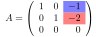

Sous-section 3.3.1 Les zéros d’une transformation linéaire
On considère une matrice \(m\times n\) et le système d’équations linéaires \(A\vec{x}=\vec{0}\text{.}\) Un tel système est souvent appelé homogène.
En passant. Le mot homogène a malheureusement plusieurs significations en mathématiques. Souvent utilisé pour signifier que le membre de droite d’une équation (ou un système) est nul (comme ici), il peut aussi faire référence à une fonction homogène. On ne devrait pas rencontrer d’autres utilisations du mot dans ces notes.
Géométriquement, les solutions à ce système représentent l’ensemble des valeurs
\(\vec{x}\) du domaine (
\(\R^n\) ) qui sont envoyées sur le vecteur nul de l’image (
\(\R^m\) ). Comme on l’a remarqué à la proposition
2.1.9 , le vecteur
\(\vec{0}\in \R^n\) est toujours une solution de ce système. De plus, si la matrice
\(A\) est carrée et inversible, c’est la
seule solution .
Exemple 3.3.1 . Les zéros de quelques transformations: dynamique.
Dans un premier temps, on considère les transformations de l’exemple
2.1.13 . Puisque toutes ces transformations sont inversibles sauf la projection orthogonale, on conclut qu’il n’y a que le vecteur nul comme zéro des premières. Pour la projection orthogonale, on peut réfléchir géométriquement. On cherche
\(T(\vec{x})=\vec{0}\text{.}\) Or selon l’équation
(1.2.5) , un vecteur perpendiculaire à
\(\vec{w}\) sera projeté sur le vecteur nul. Si
\(c\in \R\text{,}\) tout vecteur
\(c\vec{w}_{\perp}\) est un zéro de la projection orthogonale.
On regarde maintenant quelques exemples à trois dimensions. On considère les matrices
\begin{align*}
A&=\matcolt{1}{2}{3}{-1}{4}{1}{1}{8}{7}\\
B&=\matcolt{3}{-2}{2}{-6}{4}{-4}{9}{-6}{6}\text{.}
\end{align*}
La figure interactive suivante permet de visualiser l’image d’un vecteur par chacune des transformations. Les détails algébriques se trouvent dans les solutions ci-dessous.
Instructions.
Instructions pour la figure interactive: L’interaction suivante permet de visualiser les zéros des transformations linéaires \(A\) et \(B\text{.}\) Il est possible de déplacer le point \(P\) afin de modifier le vecteur \(\vec{u}\text{.}\) Son image par la transformation choisie (\(A\) par défaut) est affichée en rouge. Un clic sur le bouton « Point \(P\) fixé sur l’espace solution » fera en sorte que \(P\) ne puisse être déplacé que sur des points où l’image du vecteur \(\vec{u}\) libre sera nulle. Un clic sur le bouton «Point \(P\) libre » libèrera le point \(P\) pour qu’il puisse prendre n’importe quelle valeur à nouveau.
Figure 3.3.2. Les zéros de deux transformations linéaires de l’espace
Solution 1 .
On utilise Sage pour échelonner la matrice \(A\) et déterminer les solutions.
Les variables \(x,y\) sont pivots et la variable \(z\) est libre. En isolant les équations de la matrice échelonnée réduite, on trouve
\begin{align*}
x&=-2z\\
y&=-z\\
z&=z\text{.}
\end{align*}
Les vecteurs solutions au système \(A\vec{x}=\vec{0}\) sont donc ceux de la forme \(z(-2,-1,1)\text{.}\) On reconnait l’équation d’une droite dans \(\R^3\) passant par l’origine et de vecteur directeur \(\vec{v}=(-2,-1,1)\text{.}\)
Solution 2 .
On utilise Sage pour échelonner la matrice \(B\) et déterminer les solutions.
La variable \(x\) est pivot et les variables \(y,z\) sont libres. En isolant les équations de la matrice échelonnée réduite, on trouve
\begin{align*}
x&=2y-3z\\
y&=y\\
z&=z\text{.}
\end{align*}
Les vecteurs solutions au système \(A\vec{x}=\vec{0}\) sont donc ceux de la forme \(y(2,1,0)+z(-3,0,1)\text{.}\) On reconnait l’équation d’un plan dans \(\R^3\) passant par l’origine et de vecteurs directeurs \(\vec{u}=(2,1,0)\) et \(\vec{v}=(-3,0,1)\text{.}\)
Les zéros d’une transformation linéaire possèdent une propriété particulièrement utile. Celle-ci fait l’objet de la proposition suivante.
Proposition 3.3.3 . Les zéros d’une transformation linéaire sont fermés pour l’addition et la multiplication par un scalaire.
Soit \(A\text{,}\) la matrice d’une transformation linéaire, \(c\in \R\) et \(\vec{u},\vec{v}\text{,}\) des vecteurs tels que \(A\vec{u}=A\vec{v}=\vec{0}\text{.}\) Alors
Démonstration. Si l’on s’attarde aux solutions des systèmes
\(A\vec{x}=\vec{0}\) pour les matrices
\(3\times 3\) de l’exemple
3.3.1 , on peut y détecter une forme particulière des variables libres. Plus spécifiquement, pour l’exemple dont les solutions étaient contenues dans le plan de vecteurs directeurs
\(\vec{u}=(2,1,0)\) et
\(\vec{v}=(-3,0,1)\text{,}\) les variables libres étaient
\(y\) et
\(z\text{.}\) Ces variables valent respectivement
\(1\) et
\(0\) dans le vecteur
\(\vec{u}\) et
\(0\) et
\(1\) dans le vecteur
\(\vec{v}\text{.}\) Cette remarque permet d’établir une autre manière de voir les solutions à un système d’équations linéaires
\(A\vec{x}=\vec{0}\text{.}\)
Définition 3.3.4 . Les solutions de base à un système \(A\vec{x}=\vec{0}\) .
Soit
\(A\text{,}\) une matrice quelconque telle que l’équation
\(A\vec{x}=\vec{0}\) possède plus d’une solution. On nomme les « solutions de base » les solutions obtenues lorsqu’une seule une des variables libres est égale à
\(1\) et que les autres sont nulles.
 1  Il y a autant de solutions de base que de variables libres. Si la matrice \(A\) ne possède pas de variables libres, la seule solution à l’équation \(A\vec{x}=\vec{0}\) est le vecteur \(\vec{0}\text{.}\) Celui-ci n’est pas « spécial ».
L’ensemble de toutes les combinaisons linéaires des solutions de base additionnées du vecteur \(nul\) est appelé la solution homogène . On la note \(\vec{x}_h\text{.}\)
Les solutions de base sont un exemple du concept de base d’un espace qui sera défini dans le chapitre [provisional cross-reference: chap-espvec]. L’ensemble des combinaisons linéaires des solutions de base décrit le lieu « géométrique » où se trouvent tous les zéros d’une transformation linéaire. Suivant le nombre de ces solutions, ce lieu peut être une droite, un plan, un espace tridimensionnel ou un autre espace de dimension supérieure.
Par la nature des opérations élémentaires, toute solution à l’équation \(A\vec{x}=\vec{0}\) doit satisfaire le système équivalent menant à la solution paramétrique des combinaisons linéaires des solutions de base. Ainsi, ces combinaisons génèrent toutes les solutions.
On regarde maintenant des solutions de base de matrices échelonnées réduites.
Exemple 3.3.5 . Solutions de base de matrices échelonnées réduites.
On cherche à déterminer les solutions de base pour les matrices suivantes. Les matrices ne sont pas augmentées, car les solutions de base sont toujours obtenues lorsque la partie augmentée est le vecteur nul. L’information additionnelle de la colonne augmentée n’est donc pas utile.
\(\displaystyle A=\left(\begin{array}{rrr}
1 & 0 & -1 \\
0 & 1 & -2 \\
0 & 0 & 0
\end{array}\right)\)
\(\displaystyle B=\left(\begin{array}{rrr}
1 & -3 & 1 \\
0 & 0 & 0 \\
0 & 0 & 0
\end{array}\right)\)
\(\displaystyle C=\left(\begin{array}{rrrrr}
1 & 4 & 0 & 3 & 1 \\
0 & 0 & 1 & 2 & -2 \\
0 & 0 & 0 & 0 & 0
\end{array}\right)\)
\(\displaystyle D=\left(\begin{array}{rrr}
1 & 0 & 0 \\
0 & 1 & 0 \\
0 & 0 & 1 \\
0 & 0 & 0
\end{array}\right)\)
Solution 1 .
Il n’y a qu’une seule variable libre ici, la troisième. Les équations restantes sont
\begin{align*}
x-z&=0\\
y-2z&=0\\
z&=z \, \text{(libre)}\text{.}
\end{align*}
Si l’on pose \(z=1\text{,}\) on obtient la solution de base \(\vec{s}=(1,2,1)\text{,}\) la solution homogène est donc \(\vec{x}_h=z\vec{s}\) pour \(z\in \R\text{.}\)
Solution 2 .
Ici, il y a deux variables libres, la deuxième et la troisième. Les équations restantes sont
\begin{align*}
x-3y+z&=0\\
y&=y\, \text{(libre)}\\
z&=z \, \text{(libre)}\text{.}
\end{align*}
Si l’on pose \(y=1\) et \(z=0\text{,}\) on obtient la première solution de base \(\vec{s}_1=(3,1,0)\text{.}\) Si l’on pose \(y=0\) et \(z=1\text{,}\) on obtient la deuxième solution de base \(\vec{s}_2=(-1,0,1)\text{.}\) La solution homogène est \(\vec{x}_h=y\vec{s}_1+z\vec{s}_2\) pour \(y,z\in \R\text{.}\)
Solution 3 .
Dans cet exemple, les variables \(x_1\) et \(x_3\) sont pivots et les variables \(x_2,x_4\) et \(x_5\) sont libres. On écrit les équations de ce système:
\begin{alignat*}{6}
x_1&{}+{}&4x_2&{}+{}&&&3x_4&{}+{}&x_5&{}={}&0\\
& &&&x_3&{}+{}&2x_4&{}-{}&2x_5&{}={}&0\text{.}
\end{alignat*}
En posant \(x_2=1, x_4=x_5=0\text{,}\) on obtient la première solution de base \(\vec{s}_1=(-4,1,0,0,0)\text{.}\) En posant \(x_4=1, x_2=x_5=0\text{,}\) on obtient la deuxième solution de base \(\vec{s}_2=(-3,0,-2,1,0)\text{.}\) Finalement, en posant \(x_5=1,x_2=x_4=0\text{,}\) on obtient la troisième et dernière solution de base \(\vec{s}_3=(-1,0,2,0,1)\text{.}\)
La solution homogène est \(\vec{x}_h=a\vec{s}_1+b\vec{s}_2+c\vec{s}_3\) avec \(a,b,c\in \R\text{.}\)
Solution 4 . Dans cet exemple, toutes les variables sont pivots. Il n’y a donc pas de solution de base. La seule solution à l’équation \(D\vec{x}=\vec{0}\) est le vecteur nul. Donc \(\vec{x}_h=\vec{0}\text{.}\)
Il ne semble pas pratique de devoir réécrire chaque fois les équations du système pour trouver les solutions de base. On peut, toutefois, lire ces solutions directement dans la matrice.
Exemple 3.3.6 . Lecture des solutions de base à partir de la matrice.
On considère à nouveau les matrices
\(A,B,C\) et
\(D\) de l’exemple
3.3.5 .
On commence par la matrice \(A\text{.}\) Celle-ci avait une seule variable libre, \(z\text{,}\) et la solution de base trouvée était \(\vecddd{1}{2}{1}\text{.}\) On regarde la matrice \(A\text{,}\) particulièrement dans la troisième colonne (car la variable \(z\) est libre), les entrées un et deux (correspondant aux lignes non nulles).

Figure 3.3.7. La solution de base de la matrice \(A\) On peut y voir la valeur négative des composantes du vecteur de base \(s\text{.}\)
On détaille ci-dessous la lecture des matrices \(B\) et \(C\text{.}\) La matrice \(D\) n’est pas analysée, car il n’y a pas de solution de base.
Solution 1 .
On regarde maintenant la matrice \(B\text{.}\) Cette fois-ci, on s’intéresse à la deuxième et à la troisième colonne, car celles-ci correspondent aux variables libres, plus particulièrement à la première ligne de ces colonnes, car les autres sont nulles.
Figure 3.3.8. La solution de base de la matrice \(B\) Solution 2 .
On regarde maintenant la matrice \(C\text{.}\) Cette fois-ci, on s’intéresse aux deuxième, quatrième et cinquième colonnes, car celles-ci correspondent aux variables libres, plus particulièrement aux lignes un et deux de ces colonnes, car la troisième est nulle.
Figure 3.3.9. La solution de base de la matrice \(C\)
Avec l’exemple précédent, on peut distinguer deux matrices à l’intérieur d’une matrice échelonnée réduite. En ne tenant pas compte des lignes nulles, on détecte dans les colonnes pivots une occurrence de la matrice identité. Toujours sans tenir compte des lignes nulles, les colonnes libres donnent lieu à une matrice, notée \(L\) (pour libre). Cette matrice contient l’information des solutions de base. On l’illustre à l’aide d’un exemple.
Exemple 3.3.10 . Les sous-matrices \(I\) et \(L\) .
On considère la matrice échelonnée réduite
\begin{equation*}
R=\left(\begin{array}{rrrrrr}
1 & 2 & 0 & -2 & 0 & 3 \\
0 & 0 & 1 & 4 & 0 & -1 \\
0 & 0 & 0 & 0 & 1 & 2 \\
0 & 0 & 0 & 0 & 0 & 0 \\
0 & 0 & 0 & 0 & 0 & 0 \\
0 & 0 & 0 & 0 & 0 & 0
\end{array}\right)\text{.}
\end{equation*}
Les colonnes \(1,3\) et \(5\) sont pivots et les colonnes \(2,4\) et \(6\) sont libres. En éliminant les lignes nulles et les colonnes libres, on peut observer une matrice identité:
Figure 3.3.11. La matrice identité dans la matrice échelonnée En éliminant à nouveau les lignes nulles, mais en éliminant cette fois-ci les colonnes pivots plutôt que les libres, on obtient une autre sous-matrice \(L\text{:}\)
Figure 3.3.12. La matrice \(L\) dans la matrice échelonnée
On montre maintenant comment on peut se servir de la matrice
\(L\) pour obtenir les solutions de base. La matrice possède trois variables libres,
\(x_2,x_4,x_6\text{.}\) Il y aura donc trois solutions de base. On écrit dans trois vecteurs
\(\vec{s_1},\vec{s_2},\vec{s_3}\) la « matrice identité » de taille
\(\min(m,n)-r\) ‚Äâ2‚Äâ , o√π
\(r\) est le rang de la matrice (le nombre de variables pivots), aux positions libres (
\(2,4,6\) ). Dans ce cas-ci,
\(\min(m,n)-r=6-3=3\text{:}\)
\begin{align*}
\matIII &\rightarrow & \vec{s_1}&=\begin{pmatrix} *\\ 1\\ *\\ 0\\ *\\ 0 \end{pmatrix} & \vec{s_2}&=\begin{pmatrix} *\\ 0\\ *\\ 1\\ *\\ 0 \end{pmatrix} & \vec{s_3}&=\begin{pmatrix} *\\ 0\\ *\\ 0\\ *\\ 1 \end{pmatrix}\text{.}
\end{align*}
La taille des vecteurs \(\vec{s_i}\) est \(n\) si la matrice \(R\) est \(m\times n\text{.}\)
Pour compléter les vecteurs \(s_i\text{,}\) on utilise l’opposé des colonnes de la matrice \(L\text{,}\) la colonne \(1\) pour le vecteur \(s_1\) et ainsi de suite:
\begin{align*}
\begin{pmatrix}2&-2&3\\ 0&4&-1 \\ 0&0&2 \end{pmatrix} &\rightarrow & \vec{s_1}&=\begin{pmatrix} -2\\ 1\\ 0\\ 0\\ 0\\ 0 \end{pmatrix} & \vec{s_2}&=\begin{pmatrix} 2\\ 0\\ -4\\ 1\\ 0\\ 0 \end{pmatrix} & \vec{s_3}&=\begin{pmatrix} -3\\ 0\\ 1\\ 0\\ -2\\ 1 \end{pmatrix}\text{.}
\end{align*}
On vérifie à l’aide de Sage que les vecteurs ainsi trouvés sont en effet des solutions à l’équation \(R\vec{x}=\vec{0}\text{.}\)
On regarde maintenant un aspect important de la géométrie des solutions à l’équation \(A\vec{x}=\vec{0}\text{.}\) Si l’on voit la matrice \(A\) selon ses lignes,
\begin{equation*}
A=\begin{pmatrix}
\rule[.5ex]{2.5ex}{0.5pt}\hspace{-0.2cm} & \vec{a}_1 &\hspace{-0.2cm} \rule[.5ex]{2.5ex}{0.5pt} \\
\rule[.5ex]{2.5ex}{0.5pt}\hspace{-0.2cm} & \vec{a}_2 &\hspace{-0.2cm} \rule[.5ex]{2.5ex}{0.5pt} \\
\vdots & \vdots & \vdots \\
\rule[.5ex]{2.5ex}{0.5pt}\hspace{-0.2cm} & \vec{a}_m &\hspace{-0.2cm} \rule[.5ex]{2.5ex}{0.5pt}
\end{pmatrix}\text{,}
\end{equation*}
alors l’équation \(A\vec{x}=\vec{0}\) peut s’interpréter comme le système d’équations
\begin{align*}
a_{1,1}x_1+a_{1,2}x_2+\ldots +a_{1,n}x_n&=0\\
a_{2,1}x_1+a_{2,2}x_2+\ldots +a_{2,n}x_n&=0\\
\vdots &= \vdots\\
a_{m,1}x_1+a_{m,2}x_2+\ldots +a_{m,n}x_n&=0\text{.}
\end{align*}
Géométriquement, cela signifie que le vecteur solution \(\vec{x}\) est perpendiculaire à chaque ligne de la matrice. On vérifie ce fait dans l’exemple suivant.
Exemple 3.3.13 . Les zéros sont perpendiculaires aux lignes de la matrice.
On considère les matrices \(A,B\) et \(C\) ci-dessous:
\begin{align*}
A&=\begin{pmatrix}
1 &2\\
-3 & -6
\end{pmatrix}\\
B&=\begin{pmatrix} 1& 2& -3\\
-2 & -1 & 1\\
-1 & 1& -2
\end{pmatrix}\\
C&=\begin{pmatrix} 1& 2& -3\\
-2 & -4 & 6\\
-1 & -2& 3
\end{pmatrix}\text{.}
\end{align*}
Pour chaque matrice, on cherche les solutions de base et l’on vérifie que celles-ci sont perpendiculaires aux lignes de la matrice.
Solution 1 .
On échelonne la matrice \(A\text{.}\) L’opération \(3L_1+L_2\rightarrow L_2\) permet d’obtenir la matrice échelonnée réduite équivalente \(R=\begin{pmatrix} 1 & 2 \\ 0& 0 \end{pmatrix}\text{.}\) Il y a une variable libre et donc, une solution de base. Celle-ci est
\begin{equation*}
s=\vecd{-2}{1}\text{.}
\end{equation*}
La figure suivante permet d’observer la perpendicularité de cette solution (ou ses multiples) et des lignes de la matrice \(A\text{.}\)
Figure 3.3.14. Les zéros de \(A\) sont perpendiculaires aux lignes
Solution 2 .
On utilise Sage et la méthode de l’exemple
3.3.10 pour déterminer les solutions de base de la matrice
\(B\text{.}\)
La variable \(z\) est libre. Il y a une solution de base, qui est \(\vec{s}=\vecddd{-1/3}{5/3}{1}\text{.}\) La figure suivante permet de visualier la perpendicularité des multiples de la solution de base avec les lignes de la matrice.
Instructions.
Instructions pour la figure interactive: La figure montre la droite de vecteur directeur \(\vec{s}\) ainsi que les vecteurs correspondant aux lignes de la matrice \(B\text{.}\) Un clic sur « Faire apparaitre/disparaitre le plan » fera apparaitre le plan engendré par les combinaisons linéaires des lignes de la matrice \(B\text{.}\)
Figure 3.3.15. Comme la troisième ligne de la forme échelonnée réduite de \(B\) est nulle, on peut dire que le troisième vecteur est dans le plan engendré par les deux premières lignes. La géométrie de l’équation \(B\vec{x}=\vec{0}\) semble donc composée du plan engendré par les lignes de \(B\text{,}\) avec les zéros de la transformation linéaire sur le vecteur normal du plan.
Solution 3 .
On utilise Sage et la méthode de l’exemple [provisional cross-reference: ex-sousmatriceIL] pour déterminer les solutions de base de la matrice \(C\text{.}\)
Les variables \(y\) et \(z\) sont libres. Il y a deux solutions de base, qui sont \(\vec{s}_1=\vecddd{-2}{1}{0}\) et \(\vec{s}_2=\vecddd{3}{0}{1}\text{.}\) La figure suivante permet de visualiser la perpendicularité des combinaisons linéaires des solutions de base avec les lignes de la matrice.
Instructions.
Instructions pour la figure interactive: La figure montre le plan de vecteurs directeurs \(\vec{s}_1,\vec{s}_2\) ainsi que les vecteurs correspondant aux lignes de la matrice \(B\text{.}\) Un clic sur « Faire apparaitre/disparaitre la droite » fera apparaitre la droite engendrée par les combinaisons linéaires des lignes de la matrice \(B\text{.}\)
Figure 3.3.16. Comme la deuxième et la troisième ligne de la forme échelonnée réduite de \(C\) sont nulles, ces vecteurs sont des multiples de la première ligne. La géométrie de l’équation \(C\vec{x}=\vec{0}\) semble donc composée de la droite engendrée par les lignes de \(C\text{,}\) avec les zéros de la transformation linéaire sur le plan perpendiculaire à cette droite.
On fait de cette propriété une proposition.
Proposition 3.3.17 . Les zéros sont perpendiculaires aux lignes de la matrice.
Soit \(A\text{,}\) une matrice de taille \(m\times n\text{,}\) \(\vec{a}_i\text{,}\) la ligne \(i\) de la matrice et \(\vec{z}\text{,}\) un vecteur tel que \(A\vec{z}=\vec{0}\text{.}\)
Alors \(\vec{z}\cdot \vec{a}_i=0\text{,}\) c’est-à-dire que les zéros de la matrice sont perpendiculaires aux lignes de celle-ci.
Démonstration. La preuve est essentiellement faite dans la discussion qui précède l’exemple
3.3.13 .
On termine avec des commandes Sage en lien avec la sous-section.
Calcul 3.3.18 . La matrice L et les solutions de base.
On souhaite créer une fonction Sage qui retourne les solutions de base d’une matrice en reproduisant l’algorithme [provisional cross-reference: algo-solbase]. Pour cela, on crée d’abord une fonction matL qui va retourner la matrice \(L\) associée à la forme échelonnée réduite d’une matrice \(A\) quelconque. Voici quelques nouvelles fonctions Sage qui seront utiles et une manière d’ajouter des composantes à un vecteur:
Les fonctions matrix_from_rows et matrix_from_columns permettent de créer une matrice à partir des lignes ou des colonnes d’une autre matrice.
Parfois, on ne sait pas quelles seront les entrées d’un vecteur, ou bien l’on veut construire un vecteur en étape, une entrée à la fois. Pour effectuer cette opération, on utilisera plutôt une liste Sage que l’on convertira en vecteur par la suite. Par exemple, si l’on dispose d’une liste l1=[1,3,4] et d’une autre liste l2=[2,4,6] et qu’on veut créer les vecteurs qui prennent ces valeurs en alternant d’une liste à l’autre, on fera
On débute avec la création de la fonction qui retourne la matrice \(L\text{.}\) On se pose dans un premier temps la question suivante: est-ce que la matrice \(L\) existe toujours? Dans l’algorithme, on élimine les lignes de zéros et l’on ne garde que les colonnes libres. Que faire si toutes les lignes sont nulles ou si toutes les colonnes sont pivots? Dans ces cas, il n’y a pas de matrice \(L\text{,}\) mais l’interprétation est différente pour ce qui est des solutions de base. Lorsque toutes les lignes sont nulles, toutes les variables sont libres et l’ensemble solution est donc constitué de tous les vecteurs de l’espace \(\R^n\text{.}\) Si, au contraire, toutes les variables sont pivots, alors il n’y a pas de solution de base. La seule solution à \(A\vec{x}=\vec{0}\) est le vecteur nul. C’est dans ce deuxième cas qu’il faudra dire à notre fonction qu’il n’y a pas de solution de base.
Pour le cas où la matrice est nulle, selon l’algorithme [provisional cross-reference: algo-solbase], les solutions spéciales devraient sortir correctement et correspondre aux vecteurs \(\vec{e}_1,\vec{e}_2,\ldots , \vec{e}_n\) de l’espace \(\R^n\text{.}\)
Pour la matrice \(L\text{,}\) on a
On teste la fonction avec la matrice de l’exemple [provisional cross-reference: ex-sousmatriceIL]:
On va maintenant créer la fonction solbase(A), qui, à partir d’une matrice \(A\text{,}\) va retourner les solutions de base de l’équation \(A\vec{x}=\vec{0}\text{.}\) À l’intérieur de celle-ci, on va utiliser la fonction matL créée ci-dessus.
On teste la fonction avec la matrice de l’exemple [provisional cross-reference: ex-sousmatriceIL]:
Sous-section 3.3.2 L’image d’une transformation linéaire
L’équation \(A\vec{x}=\vec{0}\) a toujours une solution. Parfois, elle en a une infinité. Lorsqu’on remplace le vecteur nul par un vecteur quelconque, l’équation
\begin{gather}
A\vec{x}=\vec{b}\tag{✶}
\end{gather}
peut ne pas avoir de solution(s). Étant donnée une matrice
\(A\text{,}\) pour quel(s) vecteur(s)
\(\vec{b}\) l’équation
(✶) possède-t-elle au moins une solution?
Géométriquement parlant, quels sont les vecteurs qui sont atteints par la transformation linéaire \(A\text{,}\) c’est-à-dire, quels sont les vecteurs qui forment l’image de cette transformation? On explore quelques cas dans l’exemple suivant.
Exemple 3.3.19 . L’image de transformations géométriques: dynamique.
On considère les transformations
\begin{align*}
R_\theta&=\matcold{\cos(\theta)}{\sin(\theta)}{-\sin(\theta)}{\cos(\theta)}\\
P&=\matcold{1}{1}{1}{1}\\
B&=\begin{pmatrix} 1& 2& -3\\
-2 & -1 & 1\\
-1 & 1& -2
\end{pmatrix}\\
C&=\begin{pmatrix} 1& 2& -3\\
-2 & -4 & 6\\
-1 & -2& 3
\end{pmatrix}\text{.}
\end{align*}
On cherche à visualiser l’image de chacune de ces transformations. Pour cela, on utilise les figures interactives suivantes.
Instructions.
Instructions pour la figure interactive: Déplacer le point \(A\) afin de vérifier que n’importe quel vecteur de \(\R^2\) peut être atteint par un vecteur \(\vec{u}\text{.}\) L’image de la transformation \(R_\theta\) est donc \(\R^2\) et ce, peu importe la valeur de \(\theta\) choisie.
Figure 3.3.20. L’image de la transformation \(R_\theta\)
Instructions.
Instructions pour la figure interactive: Déplacer le point \(A\) afin de visualiser la transformation \(P\text{.}\) L’image de la transformation \(P\) semble restreinte à la droite \(y=x\text{.}\)
Figure 3.3.21. L’image de la transformation \(P\)
Instructions.
Instructions pour la figure interactive: Déplacer le point \(A\) afin de visualiser la transformation \(B\text{.}\) Un clic sur « Faire apparaitre l’image » permet de voir que les vecteurs images sont toujours restreints à un plan.
Figure 3.3.22. L’image de la transformation \(B\)
Instructions.
Instructions pour la figure interactive: Déplacer le point \(A\) afin de visualiser la transformation \(C\text{.}\) Un clic sur « Faire apparaitre l’image » permet de voir que les vecteurs images sont toujours restreints à une droite.
Figure 3.3.23. L’image de la transformation \(C\) À l’exemple
3.3.24 , on détermine algébriquement les images de ces transformations.
Pour déterminer l’image d’une transformation linéaire \(A\text{,}\) on augmente la matrice \(A\) avec un vecteur \(\vec{b}\) quelconque. En échelonnant la matrice, on obtiendra des conditions sur les entrées de \(\vec{b}\) pour que le système possède au moins une solution. Ceci provient du fait qu’un système compatible doit avoir des entrées nulles dans la partie augmentée s’il y a des lignes nulles dans la forme échelonnée réduite de \(A\text{.}\)
On trouve les images des transformations de l’exemple
3.3.19 .
Exemple 3.3.24 . L’image de transformations algébriques.
On considère à nouveau les matrices de l’exemple
3.3.19 . On détermine algébriquement les images de ces transformations.
Solution 1 .
On pose \(\vec{b}=\vecd{b_1}{b_2}\) et l’on augmente la matrice \(\R_\theta\) avec le vecteur \(\vec{b}\text{,}\) afin de procéder à l’échelonnage. On débute en supposant que \(\cos(\theta)\neq 0\text{.}\)
\begin{align*}
\left(\begin{array}{rr|r}
\cos(\theta)&-\sin(\theta)& b_1 \\
\sin(\theta)& \cos(\theta)& b_2 \\
\end{array}\right )&\matsimils{1}{\frac{1}{\cos(\theta)}} \left(\begin{array}{rr|r}
1&-\frac{\sin(\theta)}{\cos(\theta)}& \frac{b_1}{\cos(\theta)} \\
\sin(\theta)& \cos(\theta)& b_2 \\
\end{array}\right )\\
&\matsimilc{1}{-\sin(\theta)}{2}\left(\begin{array}{rr|r}
1&-\frac{\sin(\theta)}{\cos(\theta)}& \frac{b_1}{\cos(\theta)} \\
0& \frac{\cos^2(\theta)+\sin^2(\theta)}{\cos(\theta)}& b_2-b_1\frac{\sin(\theta)}{\cos(\theta)} \\
\end{array}\right )\\
&\matsimils{2}{\cos(\theta)}\left(\begin{array}{rr|r}
1&-\frac{\sin(\theta)}{\cos(\theta)}& \frac{b_1}{\cos(\theta)} \\
0& 1& b_2\cos(\theta)-b_1\sin(\theta) \\
\end{array}\right )\\
&\matsimilc{2}{\frac{\sin(\theta)}{\cos(\theta)}}{1}\left(\begin{array}{rr|r}
1&0& b_1\cos(\theta)+b_2\sin(\theta) \\
0& 1& b_2\cos(\theta)-b_1\sin(\theta) \\
\end{array}\right )\text{.}
\end{align*}
Comme toutes les colonnes sont pivots et qu’il n’y a pas de lignes nulles, on peut conclure que peu importe la valeur du vecteur \(\vec{b}\text{,}\) une solution existe (ce qui n’est pas surprenant, compte tenu de la géométrie de la rotation). En plus, on obtient cette solution en fonction des entrées de \(\vec{b}\text{.}\)
Puisque l’on a divisé par \(\cos(\theta)\text{,}\) on doit voir ce qui se passe lorsque ce dernier vaut \(0\text{.}\) Si c’est le cas, alors \(\sin(\theta)=-1\) ou \(\sin(\theta)=1\text{.}\) Dans les deux cas, la matrice se réduit aussi à l’identité à l’aide d’une permutation de lignes et d’une multiplication d’une ligne par \(-1\text{.}\)
Solution 2 .
On pose \(\vec{b}=\vecd{b_1}{b_2}\) et l’on augmente la matrice \(P\) avec le vecteur \(\vec{b}\text{,}\) afin de procéder à l’échelonnage.
\begin{align*}
\left ( \begin{array}{rr|r} 1& 1& b_1 \\ 1& 1& b_2 \end{array}\right) &\matsimilc{1}{-}{2} \left ( \begin{array}{rr|r} 1& 1& b_1 \\ 0& 0& b_2-b_1 \end{array}\right)\text{.}
\end{align*}
La matrice est déjà sous la forme échelonnée réduite et l’on constate que la dernière ligne (de la partie non augmentée) est nulle. Pour que le système possède une solution, il faut que le terme augmenté dans la dernière ligne soit nul aussi, c’est-à-dire, il faut que
\(b_2-b_1=0\text{.}\) En réécrivant, on se rend compte que les vecteurs de l’image doivent satisfaire
\(b_1=b_2\text{.}\) Ce sont précisément les vecteurs sur la droite de la figure
3.3.21 .
Solution 3 . Voir l’exercice [provisional cross-reference: exo-imgalgB].
Solution 4 .
On pose \(\vec{b}=\vecddd{b_1}{b_2}{b_3}\) et l’on augmente la matrice \(C\) avec le vecteur \(\vec{b}\text{,}\) afin de procéder à l’échelonnage.
\begin{align*}
\left(\begin{array}{rrr|r} 1& 2& -3& b_1\\
-2 & -4 & 6& b_2\\
-1 & -2& 3& b_3
\end{array}\right)&\stackrel{2L_1+L_2\rightarrow L_2}{\stackrel{L_1+L_3\rightarrow L_3}{\sim}}\left(\begin{array}{rrr|r} 1& 2& -3& b_1\\
0 & 0 & 0& b_2+2b_1\\
0 & 0&0& b_3+b_1
\end{array}\right)\text{.}
\end{align*}
La matrice est déjà sous la forme échelonnée réduite et l’on constate que les deux dernières lignes (de la partie non augmentée) sont nulles. Pour que le système possède une solution, il faut que les termes de la partie augmentée dans ces lignes soient nuls aussi, c’est-à-dire, il faut que \(b_2+2b_1=0\) et \(b_3+b_1=0\text{.}\) Ceci amène un nouveau système d’équations linéaires homogène à deux équations et trois inconnues. La matrice de ce système est
\begin{equation*}
\left(\begin{array}{rrr}
1 & 0 & 1 \\
2& 1 & 0
\end{array}\right)\text{.}
\end{equation*}
On utilise la fonction solbase définie plus haut afin de trouver les solutions de base de ce système.
Les vecteurs composant l’image de la transformation linéaire
\(C\) se trouvent donc sur les combinaisons linéaires (donc ici, la droite) du vecteur
\(\vec{s}=(-1,2,1)\text{.}\) Ceci coïncide bien avec la droite de la figure
3.3.23 , comme le montre l’animation suivante.
Instructions.
Instructions pour la figure interactive: Déplacer le point \(A\) afin de visualiser la transformation \(C\text{.}\) Cliquer sur le texte pour décomposer le vecteur directeur et suivre les instructions apparaissant.
Figure 3.3.25. L’image de la transformation \(C\) Les vecteurs de l’image possèdent une propriété similaire à
celle 3.3.3 de l’ensemble des zéros.
Proposition 3.3.26 . L’image d’une transformation est fermée pour l’addition et la multiplication par un scalaire.
Soit \(A\text{,}\) la matrice d’une transformation linéaire, \(c\in \R\) et \(\vec{b}_1,\vec{b}_2\text{,}\) des vecteurs tels que \(A\vec{x}=\vec{b}_1\) et \(A\vec{x}=\vec{b}_2\) possèdent au moins une solution. Alors
\(A\vec{x}=\vec{b}_1+\vec{b}_2\) possède au moins une solution,
\(A\vec{x}=c\vec{b}_1\) possède au moins une solution.
Démonstration. On termine avec des commandes Sage en lien avec la sous-section.
Calcul 3.3.27 . L’image de transformations linéaires et Sage.
Sage ne pourra pas travailler directement avec les variables comme \(b_1,b_2,b_3\) si on ne l’aide pas un peu. Pour déterminer l’image d’une transformation avec Sage, trois ajustements seront nécessaires. Leur raison d’être est liée au fonctionnement du logiciel et dépasse le niveau du manuel. On se contente d’appliquer la solution. On constate l’ajout d’une ligne R.<b1,b2,b3>=QQ[] au code. De plus, la colonne augmentée est inscrite à même la matrice. Finalement, on note l’utilisation de la fonction echelon_form() plutôt que le standard rref(). Avec ces ajustements, on peut obtenir la forme échelonnée réduite de la matrice avec le vecteur \(\vec{b}\) variable.
On procède avec les matrices
\(B,C\) de l’exemple
3.3.19 .
On trouve la condition
\(b_3-b_1-b_2=0\text{.}\) On reconnait ici l’équation normale d’un plan dans
\(\R^3\text{.}\) On pourrait trouver l’équation vectorielle en isolant par exemple
\(b_3\) ou encore en utilisant
solbase. Puisque ceci est un exemple Sage, on choisit ce bazooka pour tuer une mouche.
 3  On trouve une équation vectorielle pour ce même plan: \((x,y,z)=r(-1,1,0)+s(1,0,1)\text{.}\)
On regarde maintenant l’image de la matrice \(C\text{.}\)
On trouve les mêmes deux conditions
\(2b_1+b_2=0\) et
\(b_1+b_3=0\) sur le vecteur
\(\vec{b}\) que lors de l’exemple
3.3.24 . La solution sera bien sûr encore la droite de vecteur directeur
\((-1,2,1)\text{.}\)
Sous-section 3.3.3 La solution générale à \(A\vec{x}=\vec{b}\text{.}\)
Les solutions à l’équation
\(A\vec{x}=\vec{0}\) s’écrivent toutes comme des combinaisons linéaires des vecteurs de base. Selon le nombre de vecteurs de base, ces solutions se trouvent sur une droite (un vecteur), un plan (deux vecteurs) ou plus généralement un hyperplan (trois vecteurs ou plus) passant par l’origine. Lorsque le vecteur nul est remplacé par un vecteur
\(\vec{b}\) quelconque, les solutions ont toujours la forme de droites, plans ou hyperplans, mais ceux-ci ne passent plus nécessairement par l’origine. Il est possible d’écrire toutes les solutions à l’équation
\(A\vec{x}=\vec{b}\) comme la translation des solutions à l’équation
\(A\vec{x}=\vec{0}\text{,}\) un peu à l’image de la figure
1.3.13 .
En fait, si l’on suit la démarche de la section
3.2 lorsqu’il y a infinité de solutions, c’est précisément ce qui se passait lorsqu’on isolait les variables pivots en fonction des variables libres. On ne fait donc que faire le lien avec la première sous-section.
Exemple 3.3.29 . Des systèmes à quatre équations et trois inconnues, prise deux.
On reprend les systèmes
\begin{equation*}
(A|\vec{b}_1)=\left(\begin{array}{rrr|r} 2& -3& 1 & 5 \\
6& 0& 4 & 3\\
6 & 9& 5 & -9 \\
-6& 9 & -3 &-15\end{array}\right)
\end{equation*}
et
\begin{equation*}
(B|\vec{b}_2)\left(\begin{array}{rrr|r} 1& 6& -3 &3 \\
\frac{4}{3}& 8& -4& 4\\
\frac{1}{3} & 2& -1 &1 \\
-3& -18 & 9 &-9\end{array}\right)
\end{equation*}
de l’exemple
3.2.5 . La solution respective à ces systèmes était
\begin{equation*}
\vecddd{x}{y}{z}=z\vecddd{-\frac{2}{3}}{-\frac{1}{9}}{1}+\vecddd{\frac{1}{2}}{-\frac{4}{3}}{0}
\end{equation*}
et
\begin{equation*}
\vecddd{x}{y}{z}=y\vecddd{-6}{1}{0}+z\vecddd{3}{0}{1}+\vecddd{3}{0}{0}\text{.}
\end{equation*}
Pour la matrice \(A\text{,}\) le vecteur \(\vecddd{-\frac{2}{3}}{-\frac{1}{9}}{1}\) devrait être celui de la solution de base et le vecteur \(\vecddd{\frac{1}{2}}{-\frac{4}{3}}{0}\) représente la translation de la droite de vecteur directeur \(\vecddd{-\frac{2}{3}}{-\frac{1}{9}}{1}\text{.}\) On vérifie avec la fonction solbase et la matrice \(A\text{.}\) Malheureusement, on doit la redéfinir puisque l’on n’est pas dans la section principale du texte.
Pour la matrice \(B\text{,}\) les vecteurs \(\vecddd{-6}{1}{0}\) et \(\vecddd{3}{0}{1}\) devraient être ceux des solutions de base et le vecteur \(\vecddd{3}{0}{0}\) représente la translation du plan engendré par les deux premiers vecteurs. On vérifie avec la fonction solbase et la matrice \(B\text{.}\)
On obtient la proposition suivante, sur l’allure des solutions à l’équation \(A\vec{x}=\vec{b}\text{.}\)
Proposition 3.3.30 . La forme générale des solutions à l’équation \(A\vec{x}=\vec{b}\) .
Soit \(A\text{,}\) une matrice \(m\times n\text{,}\) \(\vec{b}\text{,}\) un vecteur de \(\R^m\) pour lequel l’équation \(A\vec{x}=\vec{b}\) possède au moins une solution et soit \(\vec{x}_h\text{,}\) la solution à l’équation homogène \(A\vec{x}=\vec{0}\text{.}\) Finalement, soit \(\vec{x}_p\text{,}\) une solution particulière à l’équation \(A\vec{x}=\vec{b}\text{.}\) Alors
\begin{equation*}
\vec{x}_g=\vec{x}_p+\vec{x}_h
\end{equation*}
représente l’ensemble de toutes les solutions à l’équation \(A\vec{x}=\vec{b}\text{.}\) On dit que \(\vec{x}_g\) est la solution générale.
Démonstration.
Dans un premier temps, on vérifie que \(\vec{x}_g\) est bel et bien une solution à \(A\vec{x}=\vec{b}\text{.}\)
\begin{align*}
A\vec{x}_g&=A(\vec{x}_p+\vec{x}_h)\\
&=A\vec{x}_p+A\vec{x}_h\\
&=\vec{b} +A\vec{x}_h & &\text{ car} A\vec{x}_p=\vec{b}\\
&=\vec{b} +\vec{0} & &\text{ car} A\vec{x}_h=\vec{0}\\
&=\vec{b}\text{.}
\end{align*}
On montre maintenant que toute solution à l’équation \(A\vec{x}=\vec{b}\) peut s’écrire sous cette forme. Soit \(\vec{x}\text{,}\) une solution à \(A\vec{x}=\vec{b}\text{.}\) On remarque que
\begin{align*}
A(\vec{x}-\vec{x}_p)&=A\vec{x}-A\vec{x}_p\\
&=\vec{b}-\vec{b}\\
&=\vec{0}\text{.}
\end{align*}
Ainsi, \(\vec{x}-\vec{x}_p\) est une solution à l’équation \(A\vec{x}=\vec{0}\text{.}\) Il existe donc \(a_1,a_2,\ldots a_k\in \R\) tels que
\begin{equation}
\vec{x}-\vec{x}_p=a_1\vec{s}_1+a_2\vec{s}_2+\cdots + a_k\vec{s}_k+\vec{0}\tag{3.3.1}
\end{equation}
o√π les vecteurs
\(\vec{s}_1,\vec{s}_2,\ldots , \vec{s}_k\) sont les solutions de base de l’équation homogène. En laissant
\(\vec{x}\) représenter n’importe quelle solution à
\(A\vec{x}=\vec{b}\) et en l’isolant dans l’équation
(3.3.1) , on a
\begin{equation*}
\vec{x}=\vec{x}_p+\vec{x}_h\text{.}
\end{equation*}
Une manière facile de trouver une solution particulière à l’équation \(A\vec{x}=\vec{b}\) est de prendre celle pour laquelle les variables libres sont toutes égales à \(0\text{.}\) Dans la géométrie, cela va correspondre au vecteur translatant la solution homogène.
Exemple 3.3.31 . La solution particulière à un système d’équations linéaire.
On reprend les systèmes
\((A|b_1),(B|b_2)\) de l’exemple
3.3.29 . De plus, on considère la matrice échelonnée réduite
\begin{equation*}
(C|\vec{c})=\left(\begin{array}{rrrr|r} 0& 1 & 1& 0& 2\\
0& 0& 0& 1& -4\\
0& 0& 0& 0& 0\end{array}\right)\text{.}
\end{equation*}
Solution 1 .
On fait la matrice \(A\) et la matrice \(B\) ensemble. On échelonne ces systèmes afin de voir comment lire la solution particulière.
La solution particulière pour la matrice \(A\) était \(\vecddd{\frac{1}{2}}{-\frac{4}{3}}{0}\text{.}\) Ce vecteur est celui obtenu lorsque la variable libre est nulle. On remarque qu’il se trouve dans la dernière colonne de la matrice augmentée échelonnée réduite. Les entrées importantes se trouvent sur chaque ligne où il y a un pivot. L’entrée de la partie augmentée ira dans la composante de la solution particulière correspondant à la colonne qui est le pivot de la ligne. Les autres entrées du vecteur \(\vec{x}_p\) sont nulles.
Ainsi, pour la matrice \(B\text{,}\) on obtient \(\vec{x}_p=\vecddd{3}{0}{0}\text{,}\) puisque la seule variable non libre est la première et les deux suivantes sont libres.
Solution 2 . Selon ce qui est mentionné à la fin de la démarche pour les matrices \(A,B\text{,}\) la solution particulière se trouve dans la partie augmentée. Les lignes un et deux contiennent des pivots. Ce sont donc les entrées \(2\) et \(-4\) qui sont importantes. Les pivots sont aux colonnes deux et quatre. La solution particulière est donc \(\vec{x}_p=(0,2,0,-4)\text{.}\)
On termine avec des commandes Sage en lien avec la sous-section.
Calcul 3.3.32 . La solution générale avec Sage.
Dans cet exemple, on s’intéresse à créer une fonction
solgen qui, étant donné une matrice et un vecteur, va retourner la solution générale à l’équation
\(A\vec{x}=\vec{b}\text{.}\) La fonction devrait être relativement simple à créer, puisqu’on peut partir de la fonction
solbase qui retourne déjà les solutions de base. Ce qu’il faut considérer est que maintenant, il se peut que l’équation
\(A\vec{x}=\vec{b}\) ne possède pas de solution(s). Pour cela, on utilise la proposition
3.2.11 .
Pour ce qui est de la solution particulière, il suffit de rappeler que les entrées importantes de celle-ci se trouvent dans la colonne augmentée de la matrice. Ces entrées sont dans les lignes non nulles de la forme échelonnée réduite et vont à la position du pivot de cette ligne.
On essaie maintenant la fonction
solgen avec les systèmes de l’exemple
3.3.31 .